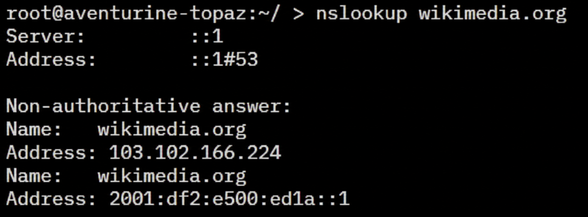

Origins of DNS
Before DNS, computers used host files: shared lists that matched names to addresses. As more computers joined the Internet, keeping every copy up to date became difficult.
The host file approach
- Organizations sent new computer names and addresses to a central registry.
- The registry published one master host file.
- Each computer downloaded its own copy and had to update it regularly.
Every computer depended on the same list. An old copy could point to the wrong address, and updating the list became harder as the network grew.
A distributed name system
In 1983, Paul Mockapetris described the first version of DNS. It divided names into levels called zones. Different organizations could manage different zones, while resolvers could search across them to find an answer.

The standards
RFC 1034 explains DNS concepts. RFC 1035 describes how to build DNS software, including its records and message formats. These standards set the foundation for DNS.
With DNS, new names could be added without asking every computer to download a full list of Internet names.